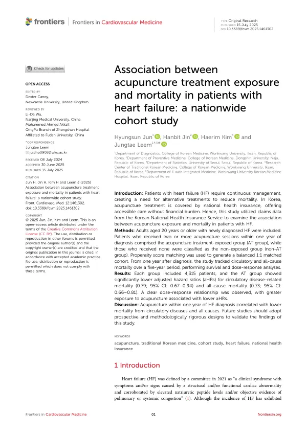

Association between acupuncture treatment exposure and mortality in patients with heart failure: a nationwide cohort study
Jun H, Jin H, Kim H, Leem J
Frontiers in Cardiovascular Medicine 12:1461302

첫 장 · 오픈액세스First page · open access
논문 소개Summary
심부전은 낫는 병이 아니라 관리하는 병입니다. 표준약물치료가 있지만 용량 조절이 까다롭고 부작용이 따르며, 동반질환이 많은 환자에서는 더 어렵습니다. 그래서 사망을 줄일 수 있는 보조적 방법이 계속 필요합니다. 한국은 침 치료가 건강보험에 들어 있어 비용 부담 없이 접근할 수 있고, 그 기록이 전부 청구자료로 남습니다. 이 연구는 그 자료로 침 치료와 사망의 관계를 살폈습니다.
국민건강보험공단 표본코호트에서 2009~2013년에 심부전을 처음 진단받은 20세 이상 성인을 대상으로 했습니다. 진단 후 1년 안에 침을 2회 이상 받은 사람을 침 치료군, 한 번도 받지 않은 사람을 비치료군으로 나누고, 두 군의 특성 차이를 성향점수 매칭으로 맞춰 각각 4,315명씩의 짝을 만들었습니다. 진단 1년 뒤부터 5년간 순환기계 사망과 전체 사망을 추적했습니다.
순환기계 질환 사망은 비치료군 283명(6.56%), 침 치료군 235명(5.45%)이었고 보정 위험비는 0.79(95% 신뢰구간 0.67–0.94)였습니다. 전체 사망은 900명(20.86%)과 695명(16.11%)으로 보정 위험비 0.73(0.66–0.81)이었습니다. 용량-반응 관계도 뚜렷해서, 침을 많이 받을수록 위험비가 낮아졌습니다. 30회 이상 받은 경우 순환기계 사망 0.47, 전체 사망 0.58까지 내려갔습니다. 다만 제한적 삼차 스플라인 곡선으로 보면 30회 부근까지 낮아지다가 그 뒤로는 다시 조금 올라가, 무한정 많이 맞을수록 좋다는 뜻은 아니었습니다.
매칭 전 두 군은 나이·성별·거주지·소득·장애·동반질환 점수가 모두 달랐습니다. 침을 맞는 쪽이 여성·고령·농촌 거주자가 많고 동반질환 점수도 높았습니다. 이는 한국의 한의 의료 이용 양상과 대체로 일치합니다. 한계로는 청구자료의 특성상 좌심실박출률 같은 심장 기능 지표를 전혀 볼 수 없다는 점, 어떤 혈자리에 어떻게 놓았는지 모른다는 점, 그리고 관찰연구라 인과관계를 확정할 수 없다는 점이 있습니다. 앞으로는 전향적이고 방법론적으로 더 엄격한 설계로 확인해야 합니다.
Heart failure is a condition to be managed rather than cured. Guideline-directed medical therapy exists, but dosing is delicate, adverse effects are common, and both become harder in patients with multiple comorbidities — so adjunctive options that might reduce mortality remain worth investigating. In Korea acupuncture is covered by national health insurance, making it accessible without financial strain, and every session is recorded in claims data. This study used those records to examine the relationship between acupuncture exposure and mortality.
Adults aged 20 and over newly diagnosed with heart failure between 2009 and 2013 were drawn from the National Health Insurance Service sample cohort. Those receiving two or more acupuncture sessions within one year of diagnosis formed the exposed group and those receiving none the unexposed group; propensity score matching produced 4,315 patients in each arm. Circulatory-system and all-cause mortality were then followed for five years, beginning one year after diagnosis.
Circulatory-system deaths numbered 283 (6.56%) in the unexposed group and 235 (5.45%) in the acupuncture group, giving an adjusted hazard ratio of 0.79 (95% CI 0.67–0.94). All-cause deaths were 900 (20.86%) and 695 (16.11%), an adjusted hazard ratio of 0.73 (0.66–0.81). A clear dose-response relationship emerged: hazard ratios fell as exposure increased, reaching 0.47 for circulatory-system and 0.58 for all-cause mortality at 30 or more sessions. Restricted cubic spline curves, however, showed the decline levelling off and reversing slightly beyond about 30 sessions — more is not indefinitely better.
Before matching, the two groups differed in age, sex, residence, income, disability grade and comorbidity scores, with acupuncture users more often female, older and rural — broadly consistent with known patterns of traditional Korean medicine use in Korea. Limitations include the complete absence of cardiac function measures such as left ventricular ejection fraction in claims data, no information on acupoints or technique, and the inability of an observational design to establish causality. Prospective studies with more rigorous methodology are needed to confirm these findings.
인용Cite
Jun H, Jin H, Kim H, Leem J. Association between acupuncture treatment exposure and mortality in patients with heart failure: a nationwide cohort study. Frontiers in Cardiovascular Medicine. 2025;12:1461302. doi:10.3389/fcvm.2025.1461302